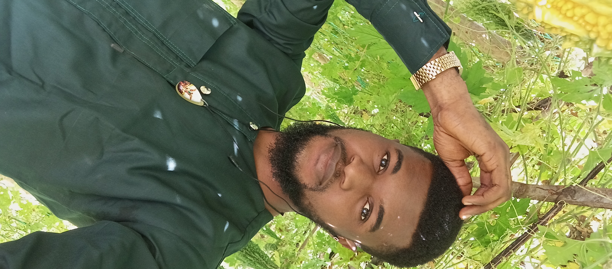
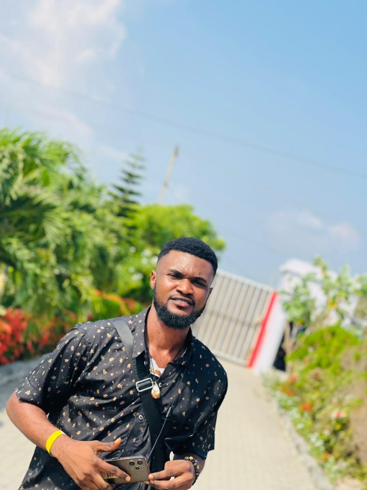
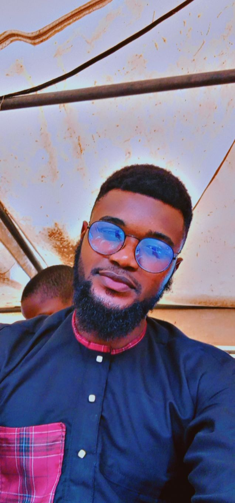

No. 5 Abeobi ogijo, ogun state Nigeria.
Tel : 08149200255 Email: johnogar87@gmail.com, ogarjohn350@gmail.com



OBJECTIVE
To be involved in an economical growth wherever I find myself, to deliver more effectively and also to
increase productivity both financially and resources wise. I possess a strong communication skill able to
promote and facilitate productive discussion.
PERSONAL DETAILS
DATE OF BIRTH : 29th May 1999 PLACE OF BIRTH : Lagos GENDER : Male STATE OF ORIGIN : Cross River L.G.A : Yala MARITAL STATUS : Single NATIONALITY : Nigerian LANGUAGES : English, Yala and Yoruba